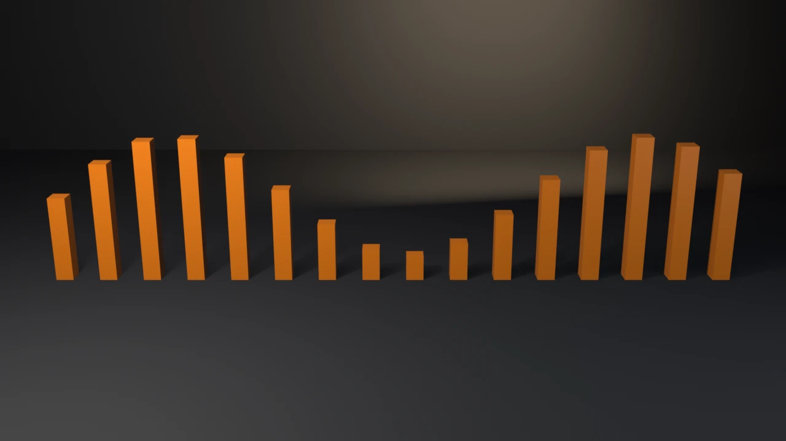

swatch-grid
Procedural Principled materials — metal and dielectric, the emission pattern, and the cross-version set_specular shim.
witnesses EEVEE engine-id mapping: BLENDER_EEVEE on 5.x, BLENDER_EEVEE_NEXT on 4.2–4.5.
View exampleRunnable, smoke-gated Blender Python examples — each executed headless on Blender 4.5 LTS and 5.1, so every render reflects code that actually runs.
Procedural Principled materials — metal and dielectric, the emission pattern, and the cross-version set_specular shim.
witnesses EEVEE engine-id mapping: BLENDER_EEVEE on 5.x, BLENDER_EEVEE_NEXT on 4.2–4.5.
View example
A slotted-actions Z-rotation turntable keyed through the cross-version channelbag path (get_channelbag_for_slot).
witnesses Slotted-actions boundary: ensure-helper channelbag on 5.x, strip.channelbag on 4.4/4.5.
View example
A Geometry Nodes SDF remesh (MeshToSDFGrid → GridToMesh at the SDF zero-level), with a Set Material node carrying the material through the remesh.
witnesses An SDF grid is meshed with Grid to Mesh, not Volume to Mesh; GN geometry needs Set Material or it renders untextured.
View example
The depsgraph lifetime contract — evaluated_get().to_mesh() paired with to_mesh_clear() — measured against an OBJ export of the same object.
witnesses Exports ship evaluated geometry: the exported vertex count equals the subsurf-applied count and is strictly greater than the base mesh.
View example
Bulk vertex IO at real scale — 9,409 vertices displaced into a standing wave with one foreach_get and one foreach_set, no per-vertex access.
witnesses The bulk path is correct, not just fast: vertex count unchanged, Z span matches the wave amplitude, probe vertex matches the closed form exactly.
View example
A driver_namespace function driving sixteen column heights through SCRIPTED drivers — the sine skyline is entirely driver-evaluated.
witnesses Driven values appear after a view-layer update in two places that must agree: the evaluated copy and the original datablock the animation system flushes for display.
View example